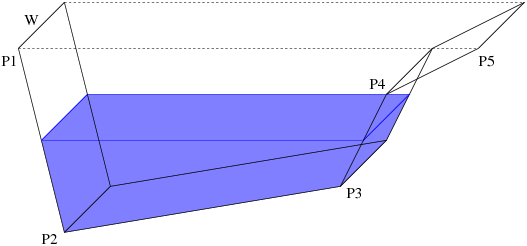

| A. Reservoir Logs |
Lack of rain in Spain is becoming a serious problem. A decrease in annual rainfall since the 1970s is said to have produced the present low reservoir levels. Although reservoirs across the country are running at an average capacity of less than 50 percent, in the worst affected areas such as Murcia, the capacity in many reservoirs is said to be less than 20 percent.
You are a scientist that must compute each month the capacity, in percentage, of water of a given reservoir.
A reservoir is described by a list of coordinates (P[1], P[2], ..., P[N]) which define its cross section, and the width W of the reservoir, as shown in the figure below. The points that define the cross section always go from the left to the right, i.e., P[i].x <= P[i+1].x.

Cross section of the reservoir: Both dimensions and coordinates are given in metres.
We know the level of the reservoir at the beginning of the month (as a percentage). Also, we know the amount of water consumed due to evaporation and population use, and the amount of water falling on the reservoir because of rain (both measures are given in cubic metres). We suppose that water consumption only happens in the first half of the month, and the rain in the second half (so, in the same month, we can have a lack of water and then an excess of water).
The first line of the input contains an integer T (0 < T < 200), indicating the number of test cases. Test cases are separated by blank lines.
Each test case starts with a line containing the number N (2 < N < 10000) of coordinate pairs (x, y) of the reservoir, with x >= 0 and y <= 0. The following N lines for each test case contain the coordinates defining the reservoir's cross section (two integer numbers per line). The first and last coordinates always have y = 0. Coordinates are always in order from left to right. The following line contains only an integer W indicating the width of the reservoir.
Finally, each test case ends with a line containing three real numbers representing: the initial percentage of water in the reservoir, the amount of spent water (in cubic metres), and the amount of water falling over the reservoir (also in cubic metres), respectively.
For each test case, you must write a line with the text "Final percentage: X%",
where X is an integer number between 0 and 100 indicating the final capacity (as
a percentage) of the reservoir; you have to take the integer part of the result (rounding
down).
If the amount of water consumed is greater than the initial capacity of the reservoir,
you must write the string "Lack of water. " before the previous
text (observe that it ends with a blank space).
If the final amount of water exceeds the potential capacity of the reservoir, you must
write "Excess of water. " (observe that it ends with a blank space)
before the final percentage and, if it appears, after the "lack of water" text.
Note that in some cases the three texts may appear. Remember: first there is a water consumption and then water recovering by the rain.
3 4 0 0 0 -2 2 -2 2 0 1 50.0 2.0 1.0 9 0 0 9 -2 11 -1 16 -3 22 -3 23 0 28 -2 28 -4 36 0 2 84.2 178.24 991.00 3 0 0 1 -1 2 0 100 0.01 23.00 49.99
Final percentage: 25% Lack of water. Excess of water. Final percentage: 100% Lack of water. Final percentage: 49%